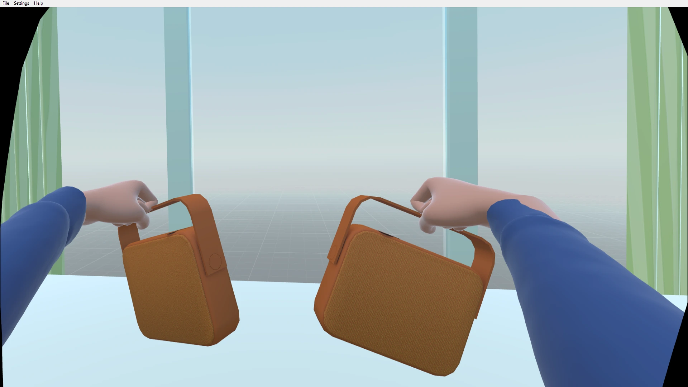
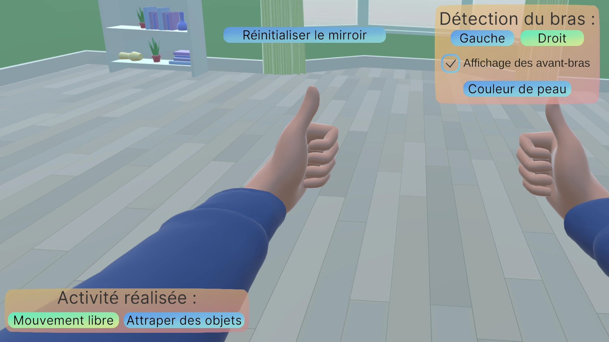
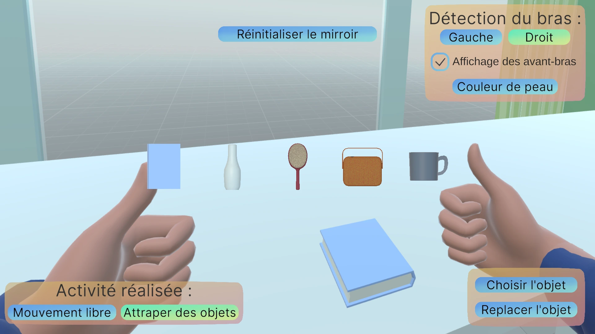
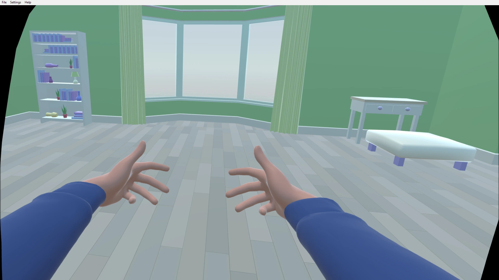

De février à mars 2026, j'ai travaillé sur un projet étudiant de ma formation en Informatique Graphique à l'IUT du Puy-en-Velay. J'ai travaillé au sein d'une équipe de 2 personnes sur le moteur de jeu Unity 6000.3.5f2 avec les bibliothèques permettant de développer des applications VR. Le projet consistait à créer une application en réalité virtuelle permettant de soigner de l'hémiplégie, une condition médicale qui affecte la moitié du corps. Les joueurs s'affrontent dans des mini-jeux pour gagner la partie. L'objectif était de se renseigner sur cette maladie et les manières de la soigner. Pour cela, nous avons développé une application qui reprend le principe de la thérapie miroir, une technique de rééducation utilisée pour traiter l'hémiplégie. Nous avons aussi intégré des options de personnalisation pour rendre l'expérience plus immersive comme la possibilité pour le soignant de choisir la couleur de peau des avant-bras du patient.

Nous avons d'abord réalisé des recherches concernant l'hémiplégie et les méthodes de thérapie associées. Nous avons notamment étudié la thérapie miroir, qui consiste à utiliser un miroir pour créer une illusion visuelle permettant de stimuler les zones du cerveau associées au mouvement de l'avant bras affecté. Nous avons aussi étudié les différentes options de personnalisation possibles pour rendre l'expérience plus immersive et adaptée aux besoins des patients.

Après la phase de groupe, j'ai développé la fonctionnalité principale du projet : le bras miroir. Pour cela, j'ai réalisé un script en C# qui permet de répliquer les mouvements de la main mobile du patient sur un bras virtuel dans l'application. Pour rendre cela plus immersif, j'ai également permis la possibilité d'afficher des avant-bras avec un vêtement par dessus.

Finalement, j'ai développé l'interface utilisateur (UI) de l'application, qui n'est visible que sur l'ordinateur du soignant et non sur le casque VR. L'UI permet au soignant de personnaliser l'expérience du patient en choisissant la couleur de peau des avant-bras, et de choisir si le patient est sur la partie mouvement libre ou la partie où il doit attraper des objets. Il peut également réinitialiser la position du bras miroir si le patient a trop bougé.

Finalement, nous avons présenté le projet devant des soignantes de l'hôpital Émile-Roux, qui sont spécialisées dans la rééducation de patients atteints d'hémiplégie. Cette présentation a permis de faire tester notre travail à des professionnelles, et de recueillir des retours positifs concernant les différentes fonctionnalités de l'application.
Ce projet m’a permis de consolider mes compétences en développement sous Unity, notamment en C#, avec des bibliothèques pour la VR. Créer une application pour soigner une maladie m’a permis d’étendre mes connaissances en matière d'interface et d'expérience utilisateur (UI/UX) pour rendre mes applications/jeux les plus immersifs possibles.